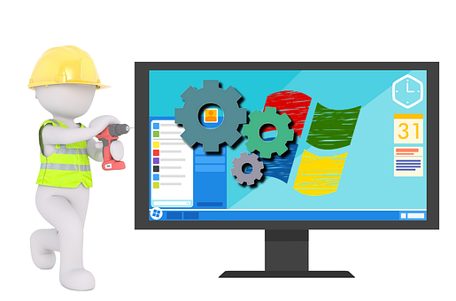
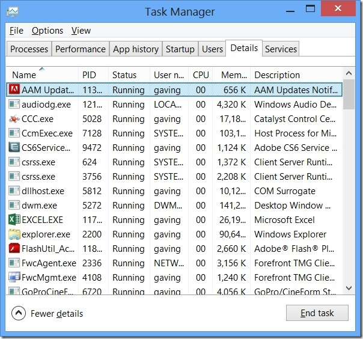
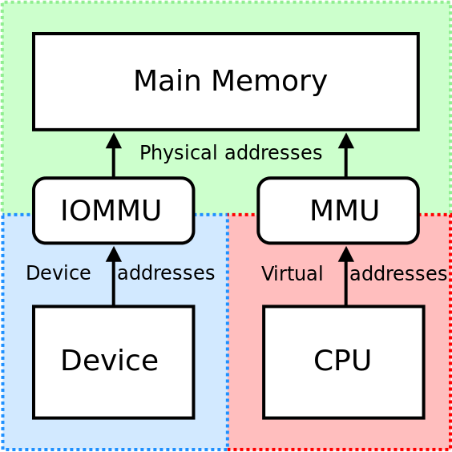
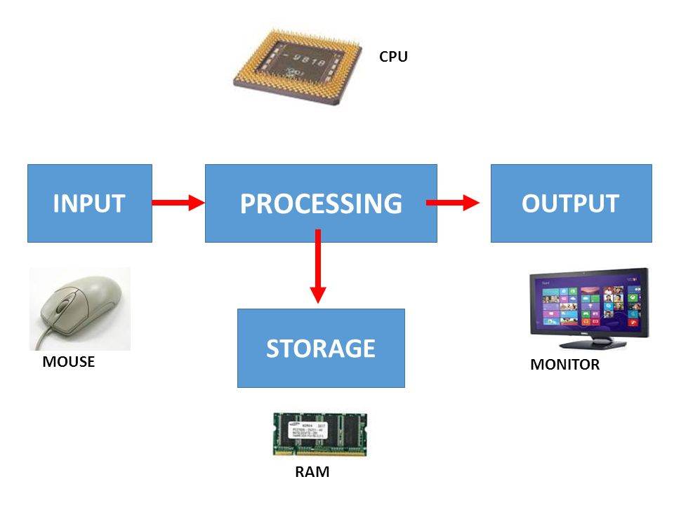
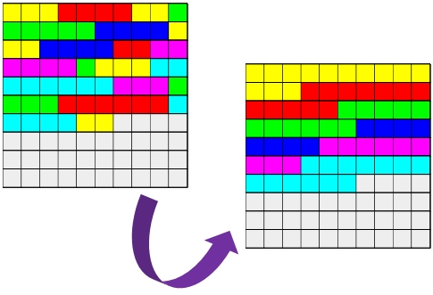
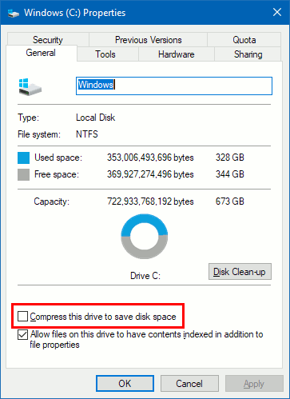

3.4.3 Computer Systems - Software Classification
Table of Contents
1 Software Classification
Learn It: Types of Software
- At the beginning of this topic we learned about computer systems and the relationship with software.
Recap - Software are the programs that control how the computer works.
- Software is any program that runs on a computer system. It can be
grouped into two main categories:
- System Software: Programs that are needed to enable the computer
to function, including the
operating system,utilities software,library routinesandprogramming language translators.
- System Software: Programs that are needed to enable the computer
to function, including the
- Application Software: Programs that enable a user to perform particular
tasks like;
word processing,spreadsheet calculations,databases management,gaming,web browsing,mobile phone apps,graphics design,programming,music editingand many more programs for specific applications such aspayroll,accounts,air traffic controletc.
2 System Software
Learn It: What is System Software?
- System Software is a program that is needed for effective
communication with the hardware that enables the computer to
function and for launching application software:
- Operating Systems, such as Windows, IOS and Android,
- Utilities Software, such as antivirus and compression software.

The Operating System
Operating System - A piece of software that acts as an interface between the user and the hardware, managing all hardware and all other software. If another piece of software is to be launched, it will be launched from the operating system.
Operating Systemsare complex pieces of software, often requiring many years and many people to develop them.- The reason that they are complex is simply that
computers are complexed, with manyhardware componentsandsoftwarethat requiresmanagement. - Some of the many things that are managed by the operating system
are:
- Processors Management - The operating system decides:
- Which processes will be carried out by which processor.
- If multiple processes are running, which one the processor should handle next.
- How long a time slice a process should be given, i.e. How long before the processor's attention swithches to the next process.
- Processors Management - The operating system decides:

- Memory Management - The operating system:
- Loads program abd data from backup storage to the main memory.
- Removes un-needed programs and data to make room for more.
- Manages virtual memory where a part of the secondary storage is used an an overflow area for the main memory.

- Management of I/O Devices - In regards to system input/output devices, the operating system:
- Acts as a go-between, passing data from input –> application software, or application software –> output.
- Manages device drivers, which are programs telling the operating system how to communicate with the attached input/output devices, for example, a mouse, keyboard ,microphone or a printer.

- Application Management - The operating system:
- Communicates between the application software and the hardware.
- Processes requests from application software for resources, such as network connection or a remotely stored file.
- When an application is run, the OS will allocate space in memory for it to be loaded and the job will enter the queue of jobs being allocated processor time.
- Security Management - The operating system can:
- Control access to a device by setting up passwords for different users.
- Setting different access rights and privileges for different users.
- Automatically download OS updates to ensure security issues are patched.
- Automatically back up and encrypt data, thereby increasing security.
- Identify all active users currently on a network, manually log out users and monitor when/how long each user has logged in over a period of time.
Utility Software
Utility Software - Programs that helps to =maintain= or =configure= a computer/device. Many useful ultilities are installed with the OS, for example by freeing up storage space, removing viruses or ensuring that data is backed up regularly.
- Some of these utilities include:
- Security Utilities - Help to keep your data safe by encrypting
data to protect it from unauthorised individuals from accessing it
or for secure storage or transmission. The encryption process uses
an algorithm and a key to transform
plaintextintociphertext.
- Security Utilities - Help to keep your data safe by encrypting
data to protect it from unauthorised individuals from accessing it
or for secure storage or transmission. The encryption process uses
an algorithm and a key to transform

- Disk Organisation - Help to organise your files into folders and perform disk defragmentation (Organise fragmented files together, to speed up disk access).

- Data Compression - Help to
reduce the size of a file, so that it can be stored using less space or tramsmitted more quickly. Automatic update utilities make sure that any software installed on a computer/device is up-to-date.

- File Backup - Creating a
copy of file, either on the same disk, or on abackup deviceorcloud service. Backing up can either befullorincremental:- Full Backup - Involves creating a copy of all files.
- Incremental Backup - Involves creating a copy of only the files that have been created or edited since the last backup.

Badge It: Exam Questions
Silver: Answer the three following exam questions:
- Describe the purpose of a graphical user interface (GUI)?
- System software and application software are two different types of software. Give one example of application software?
- Describe what a device driver does?
- Upload to Algorithms - Software Classification: Silver on BourneToLearn
Badge It: Exam Questions
Gold: Answer the three following exam questions:
- Describe in detail four functions of a typical operating system?
- Explain why certain household devices may not need an operating system?
- Give one example of a utility program?
- Upload to Algorithms - Software Classification: Gold on BourneToLearn